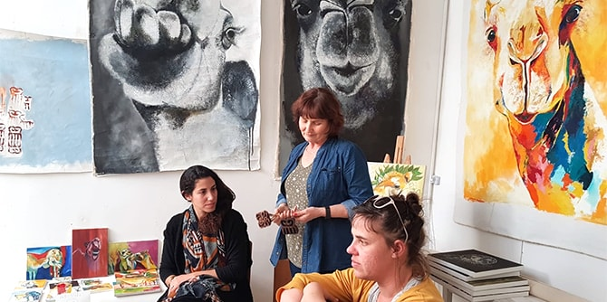
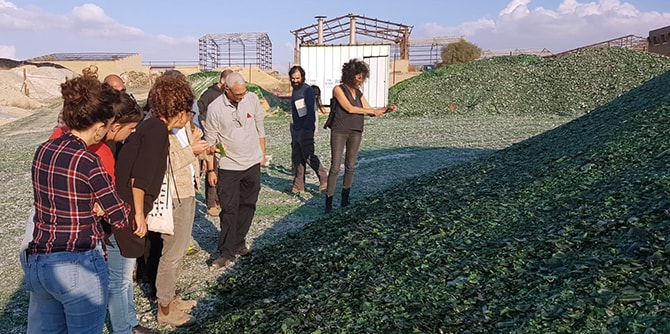
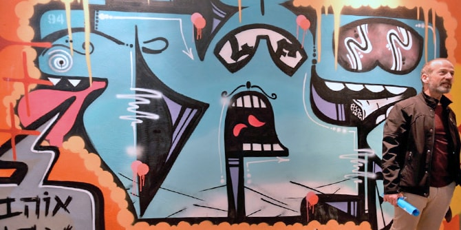
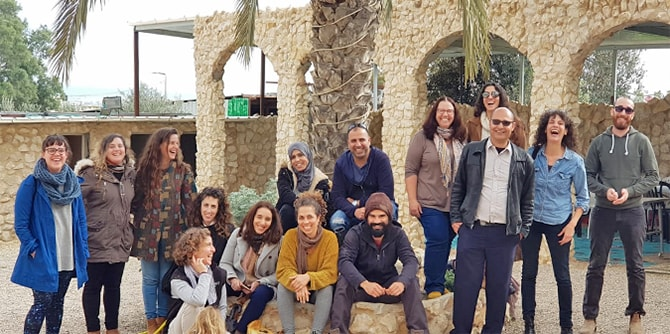

כחלק ממהלך למידה מעמיק במסגרת יחידת לימוד העוסקת במקום וחברה, בהובלת ד"ר רותם ברסלר גונן ופרופ' דנה אריאלי, סיירה הקבוצה במגוון יישובי הנגב. ביחידת לימוד זו, העמיתים עורכים בירור מהם המאפיינים של תרבות ואמנות בנגב, דרך מפגש עם יוצרים ומובילי תרבות ביישובים שונים – יהודיים וערביים, ודרך למידת האתגרים העומדים בפניהם בבואם ליצור ולקדם תרבות ברמה המקומית והאזורית. בסיורים השונים פגשו העמיתים דמויות מעוררות השראה הפועלות לקידום מיזמי תרבות המשקפים את התרבות הייחודית של המקום שבו הם פועלים.
הסיור שהיווה את מפגש הפתיחה ליחידת "מקום וחברה" התקיים ב"חווה החקלאית" בבאר שבע, בהנחייתה של
משכית הודסמן, בוגרת תוכנית מנדל למנהיגות אזורית בבאר שבע, מחזור ב'. במסגרת הביקור בחווה החקלאית התנסו העמיתים ב"מטבח הטיפולי" ולמדו על אוכל בהקשרו התרבותי, החברתי, הפסיכולוגי והסוציולוגי; על החיבור שאוכל יוצר בין תרבויות וקהילות שונות ; וכיצד בישול מסייע בתהליך בירור זהות, משקף מסורת ומעלה זיכרונות.

גלריית "בית הקשתות" בבאר שבע
חלק מהסיורים התמקדו בהיכרות מעמיקה של שדות הפעולה של העמיתים, ובהם נערכו דיונים בשאלה כיצד אפשר לשכלל את עשייתם עבור תושבי הנגב. בין היתר ביקרו העמיתים ב"טרמינל העיצוב" בירוחם, שבו פועלת אחת העמיתות בתוכנית, ובבית המדרש המקומי, וכן למדו על אמנות ועיצוב מקומיים הצומחים בהשראת מפעל "פניציה". את הביקור במפעל הדריך
שמעון בן זקן, בוגר תוכנית מנדל למנהיגות אזורית בירוחם וברמת הנגב. העמיתים ביקרו גם בתערוכת ציורים בעומר "הבית בדפנה", פרי יצירתה של עמיתה אחרת המשתתפת בתוכנית.
 מפעל "פניציה", ירוחם
בסיור שהתקיים בבאר שבע, בהובלת האדריכל
עמרי עוז, נחשפו העמיתים לאדריכלות הברוטליזם ולהשפעתה על העיר, וביקרו בתערוכה "חלומות מבטון" במוזיאון הנגב, בהנחיית הצלם
אלי סינגלובסקי. בסיור נוסף, שתכננו עמיתים המשתתפים בתוכנית, בהובלת חבר סגל המרכז
ד"ר יצחק (קיקי) אהרונוביץ, למדה הקבוצה על עירוניות ועל "הבועות" בעיר באר שבע. במסגרת הסיור סיירו העמיתים בשכונות השונות בבאר שבע, במתחם ההייטק ובעיר העתיקה.

תערוכת גרפיטי "יד חופשית", מרכז הצעירים, באר שבע
בסיור שהתקיים בישובים הערביים רהט ולקייה, בהובלת אחד מעמיתי התוכנית, נחשפו העמיתים לתרבות ולאמנות הצומחת ביישובים אלו, ולמדו על האתגרים המורכבים הכרוכים בקידום תרבות ויצירה בחברה מסורתית. העמיתים פגשו את היזמים
אורן נבו וסונדוס אלהוזייל, מובילי פרויקט צילום לנוער ברהט; נפגשו עם
טלאל אבו סעד מלקיה, בוגר תוכנית מנדל למנהיגות מקומית ברהט מחזור א', ושמעו ממנו על קידום פסטיבל "קסם המדבר"; פגשו את
אמאל אבו קרן, מנהלת ארמון החוריה; וביקרו במוזיאון ג'ו אלון בתערוכה "שלושה ימים ושליש" בהדרכת האוצרת
ליאת יהודה.

עמיתי התוכנית ב"ארמון החוריה" בלקיה
{kind=link}
{kind=link}
{kind=link}
{kind=link}